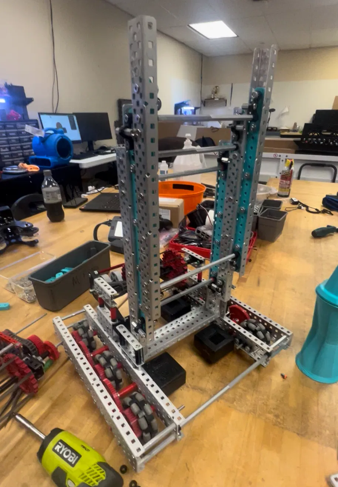

IEEE VEX U Robotics, Rutgers University
Sept 2025 – PresentElectrical & Build Member · Quartermaster (E-Board)
- Wired and integrated 5 time-of-flight sensors, motors with onboard controllers, pneumatics, and power distribution, including the odometry system for autonomous routines.
- Argued for an Orange Pi over LiDAR as the robot's vision platform, since it could read AprilTag fiducials and run object detection for autonomous positioning, while LiDAR only measures distance.
- As quartermaster, maintain the drill press, bandsaw, miter saw, belt sander, and 3D printers, supervise machine use, and manage a $1,000 supply budget.
- Collaborate with a 14-member team and document the build in the team's engineering notebook.
Elevator design
- Built three versions of a 3-stage elevator toward a 50 in target: metal C-channels (36 in, too much metal-on-metal friction), then drawer slides (smooth ball bearings, but heavy, too wide, and capped at 28 in; strung with a 3D-printed winch and motor-tested), then C-channels again with 3D-printed slide-rail inserts (30 in, smooth).
- Tested the inserts at three fillet radii (0.05, 0.1, 0.25 in). The first two still let the C-channels catch on the corners; 0.25 in let them funnel in cleanly.
- Designed the 3D-printed parts in Onshape: pulleys, drawer-slide hardstops, C-channel guides, pillow-block hardstops, and four versions of the slide-rail insert, including full-length 21- and 24-hole variants.
- The semester started before V3 was strung or motorized. The team went with a 4-stage elevator on JLC slides, which reached 40 in.
